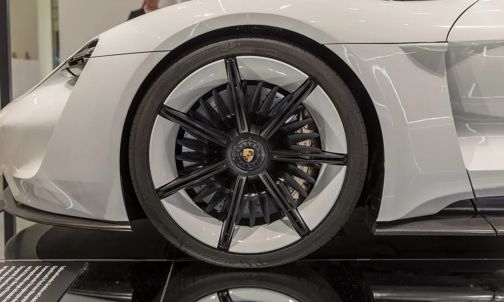

Cars245
An online car parts store with an EU warehouse in Riga and worldwide shipping through DHL, UPS, FedEx, USPS and EMS. Buyers can search by OEM part number. Returns need approval within 14 days of receipt, and the buyer pays return shipping.

RockAuto ships worldwide unless prohibited by law, according to its help page, and it has a large catalog. Buyers still look elsewhere for different reasons: delivery terms, return costs, local pickup or a different rating. The twelve stores below differ on those points. Compare delivery countries, return terms and ratings, then choose the one that fits your country and part.
Delivery and returns. RockAuto's help page says shipping charges are not refundable unless the return is due to its mistake, and the buyer generally pays return shipping.
Customer ratings. RockAuto's Trustpilot score is 1.8 of 5 across 3,506 reviews as of 18 November 2026.
Local pickup. Chains such as NAPA, AutoZone, O'Reilly and Advance Auto Parts offer ship to home and store services in the United States.
An online car parts store with an EU warehouse in Riga and worldwide shipping through DHL, UPS, FedEx, USPS and EMS. Buyers can search by OEM part number. Returns need approval within 14 days of receipt, and the buyer pays return shipping.
Ships within the continental United States only, according to its FAQ, so buyers abroad need a forwarder. Payment options include cards, PayPal, Apple Pay, Google Pay and Zip. Returns are accepted within 30 days of delivery. Trustpilot shows 3.8 of 5.
States more than 10 million auto parts, which is a store claim. Returns are accepted within 30 days with an RMA number, and the customer pays return shipping unless stated otherwise. Trustpilot shows 3.6 of 5 across 176,215 reviews as of 18 November 2026.
Lists Great Britain, the Isle of Man, Jersey, Guernsey and many European countries on its delivery page. In-stock items are sent within 1 to 2 working days after payment. Returns allow 14 days from delivery, and a paid Safe Order option extends that.
Sells European car parts and offers international shipping, with taxes and duties set by the carrier on delivery. Returns can be requested within 90 days through its portal, and the customer pays return shipping. Trustpilot shows 4.6 of 5 across 2,097 reviews.
Ships to all US states but not to US territories, and offers pickup in store. Standard ground shipping typically takes 2 to 5 business days. Ship-to-home items can be returned free through UPS within 30 days of receipt, while batteries go to a NAPA store.
Offers ship to home and in-store pickup, and a VIN decoder that determines year, make, model and engine for fitment. Read its online return policy and shipping terms before ordering, and confirm that the part you need can be shipped to your address.
Ships to the 50 US states and Puerto Rico and states that it does not ship elsewhere. Most orders of $35 or more ship free by ground, excluding cores. Returns are accepted within 90 days, and the customer pays shipping on online returns.
Standard shipping is free over $35 and takes 3 to 4 business days, with expedited and urgent options. Returns are accepted within 45 days if the item is new, unopened and uninstalled. Shipping charges are not refunded unless the store made an error.
Offers a Confirmed Fit tool that checks a part against your vehicle's year, make, model, drivetrain and engine type, according to a Capital One guide. Listings come from many sellers, so check the seller and the return terms on each listing before buying.
Offers a My Garage feature where you enter your vehicle to check that a part fits, according to a Capital One guide. Listings come from many sellers, so shipping, returns and import duties differ from listing to listing. Read the seller's terms first.
A Canadian store that states free shipping on orders over CAD $99 and shipping across Canada. That is a store claim from its services page, so confirm the shipping cost and the return terms at checkout before you pay for the order.
Start with where the part must go. If the store does not ship to your country, remove it from your list or consider a forwarder. Next compare return terms, including who pays return shipping and how many days you have. Then compare ratings, remembering that ratings reflect the reviewers on one platform. Finally compare the total including shipping, tax and import duties at checkout, and keep the page that shows the total in case a dispute arises.
It depends on what you value. Some stores publish longer return windows, some ship to specific countries, and some offer store pickup. RockAuto's Trustpilot score is 1.8 of 5 across 3,506 reviews as of 18 November 2026. Compare the delivery and return terms in this list.
Cars245 states worldwide shipping from an EU warehouse. FCP Euro offers international shipping, and Autodoc lists many European countries. CarParts.com and O'Reilly Auto Parts state that they ship only within the United States, so check each store's status before ordering.
Among the ranked stores, O'Reilly Auto Parts and FCP Euro allow the longest window, 90 days, FCP Euro through its return portal. Read the conditions on each page.
Checked 18 November 2026: RockAuto help, CarParts.com FAQ, PartsGeek return policy, Autodoc shipping, O'Reilly, PartsAvatar, NAPA shipping, FCP Euro returns, Capital One guide. Store claims are labeled as such, and terms may change without notice.